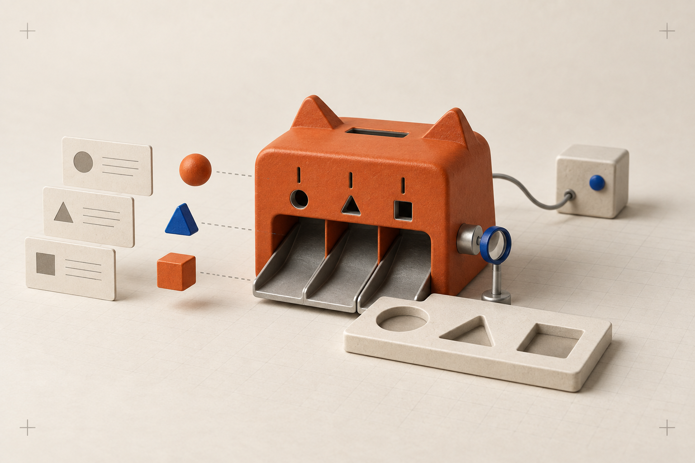
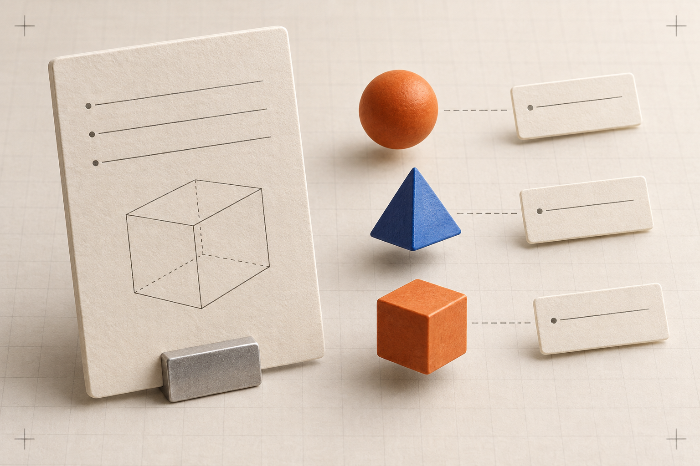
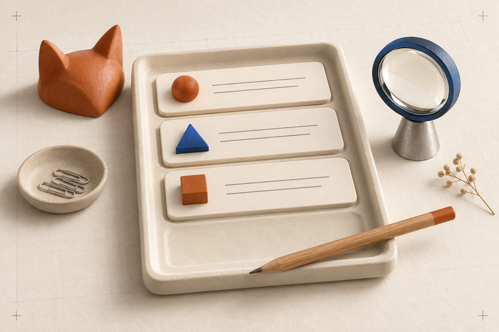
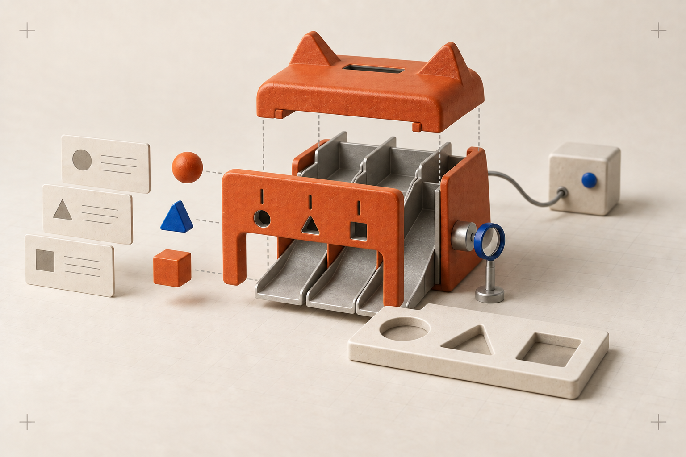

CREATIVE STUDY · LOCAL REVIEW
Big ideas.
Little fields.
Bring the information you already have. Put it in the form you already use. Keep the final say.
A collection of friendly machines, inspectable diagrams, and a spatial story for FieldFox.
Start the studio using the instructions in README.md. This page works directly from the folder.

A home for the information.
Soft materials explain a simple idea: useful information can move from a source into a form. The machine is a visual metaphor for a software process, not a model of physical hardware.
{kind=link}

It starts with what you have.
Text, images, and supported documents are the starting material. The explanation lives in editable text around the illustration.
{kind=link}

You keep the pencil.
A filled field is an invitation to review. Compare the result with the source, edit what needs attention, and let your application handle submission.

Open up the little machine.
The exploded composition introduces the technical layer. In the live scene, actual 3D parts can separate as the story reveals each stage. This image is a visual variant, not a pixel-aligned animation frame.


A small note about the technical layer
These are explanatory illustrations, not evidence of extraction accuracy. FieldFox sends supplied sources and included form context to a configured server and model provider. Plan validation and field readback check different things from factual correctness. The human still reviews the result, and FieldFox never submits the form.
Cloud onboarding is pre-launch. The hosted path shown here is the intended experience. See the claim/source reference and full storyboard.